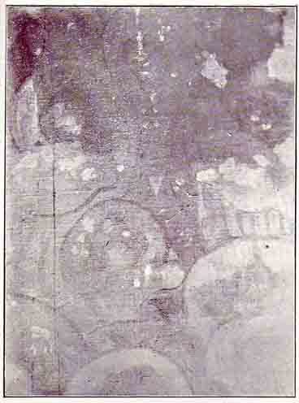
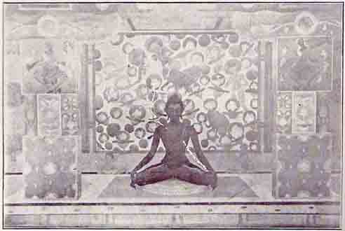

Sittannavasal Frescoes
By M. S. SUNDARA SARMA, B. A.
II
Sittannavasal is a small hamlet about two miles from the village Annavasal, which again, is ten miles to the north-west of Pudukotah, the capital of a small Indian State situated to the south of the Tanjore District. A fine road leads one from Pudukotah to the village, from whence one has to wade through a cart-path to reach the hamlet. A few furlongs from the hamlet stretches a low rocky hill, rising here to about two hundred feet or so, and then going down to about half that height. The hill is not more than three-fourths of a mile long and runs from north to south approximately, so that its two sides are exposed to the rising and setting sun. From the hamlet the western side of the hill is visible and the cave in question could be seen as if it were a window to a huge structure at a distance. Wading through paddy fields, one reaches to the foot of the hill and then one has to climb up a rough, slippery and rocky pathway before coming to the facade of the cave itself. The hill abruptly rises here presenting an almost perpendicular side, the height of the hill at this part being the greatest. The Pudukotah State has taken care of the cave by fencing it completely with iron bars and wire-netting, so that now none could enter the cave indiscriminately. It is provided with a gate which is kept under lock and key. Curiously enough, at the time I went there, although I had obtained the key from the authorities at Pudukotah, I had no occasion to use it, for I found the lock open and simply inserted nominally in its place! On enquiry, I found that the Village Headman in charge who was provided with a duplicate key had kept it so, just to save himself the trouble of accompanying any visitor to open it! I brought the matter to the notice of those concerned and I do hope better care is now taken of the precious old find, than before.

A Portion of the Ceiling
(Note the work of Age and Vandalism)
My first impression of the cave was rather disappointing, for the cave is a small one measuring only twenty-four feet by twelve or so, and the height of the ceiling from the floor is about eleven feet or thereabouts, and the paintings which are intact are not visible at first sight, having become faint as well as dark, partly on account of age and partly on account of age-long neglect and indifference. Further, in addition to the plaster having fallen out at several places, much of what remains intact has been also darkened by smoke from fires lit in the cave by resting bairagies. Balls of dung have been freely hurled at the ceiling; evidently the village urchins must have used the picture on the ceiling as a good target for their balls of dung and clay, which can now be seen sticking here and there! Any attempt to remove them brings away the plaster too, so that they are better left there to tell their tale too. Those parts which are visible on the upper portions of the pillars are so faint and broken that it requires some effort to see the paintings. Surely the whole of the cave must have been originally covered with paintings, for traces of them could be seen everywhere as you become more and more familiar with the contents of the cave. Even the sculptured figures that are found in the cave exhibit traces of plaster and colour. What they must have looked like originally, none can say now, except it be a strong imaginative vision of an artist. A small door-way carved at the middle leads one to a cell in the interior measuring ten feet all the way. There are three seated figures opposite this doorway so that light falls directly in front of them through the entrance. All of these carved figures are of life size and are of different facial types. But all of them are seated alike in the immemorial yogic pose, with the eyes directed towards the nose, and erect in pose ‘like a flame that flickereth not in a windless place’. The place is neither a temple nor a shrine. It is simply a mandapam that must have been resorted to by those who wanted seclusion from the world or spiritual contemplation and communion, for which purpose it is pre-eminently fitted even now and must have been originally used for that purpose only. Many such mandapams are to be found all over Southern India, and, in fact, wherever in the South you see a perpendicular height of a rock you may be sure of finding a similar rock-cut cave. More than a dozen of them have come to my personal notice and observation in the South. This one, being a little more out of the way, has been fortunate enough to escape vandalism and preserve the paintings at least partially. Examining the floor of the cell inside carefully, there is a circular piece of stone right at the centre, which appears to be inverted. Perhaps it leads to a further cell underneath; but nothing definite can now be stated. If there be one as surmised, it should contain paintings too, which surely must be in a state of good preservation.
Such caves cannot be said to be of Jain or Buddhistic origin. Jains, Buddhists and Hindus have all left their marks in such caves. Each cave has to be decided individually by what is recorded in it. Very often the mistake is made of relying too much upon the inscriptions found in such caves. Inscriptions are of later origin in India and began at a time when the real aesthetic sense of the nation had decayed. That such inscriptions do really mar the beauty of a place, there can be no doubt. The people who loved beauty and did wonders on hard rocks could never have condescended to disfigure them with vainglorious inscriptions. The history of inscriptions, their origin, life and death, will be a lively and informing chapter in the history of Indian Art. One thing is certain; the moment of its birth is the beginning of the death and decay of the art of the land. Fortunately there are no inscriptions in the cave we are considering at Sittannavasal, and the kings with inscription mania must have been prevented from doing anything of the kind here because of the paintings that covered the whole of the interior of the cave. There is, however; a small inscription but just outside the cave, which had evidently escaped the searching eyes of both Mr. Rao and M. Dubreuil, to which I drew the attention of the press the moment I discovered it. Nobody has, so far as I know, as yet deciphered the same. The five carved figures prove nothing, for such, posed figures are common alike to Jainism, Buddhism and Hinduism. To call all such seated figures Buddhas or Bodhisatwas, belongs to the province of alien critics who know not the deeper under-current of history of this ancient land.
The architecture of the cave is very simple but elegant. It is made to resemble a built structure. There is no display of the tentative efforts of a rising art, but the mature style of a perfected art is exhibited in the carving out of this rocky cave. Leaving a margin of about a foot in breadth on the outside top, there is a deep groove parallel to the top line opening at both ends to easily collect all the water that rushes along the perpendicular face of the hill above the cave during rains, and prevent the same from flooding the cave inside. There are four pillars in front supporting the roof of the cave. Two of them on either end are embedded on the side of the cave, so that only a portion of each juts out. The two in the middle are in the round and are sturdy stout pillars, square in section with an octagonal belt in the middle. They each support a capital which is fluted on either side. Over the capitals rests a long flat beam, which in turn supports a double flexured cornice. The roof is flat and plain, as in all Dravidian architecture. On either side of the cave is a niche in which is seated a carved figure of life size. The back wall is beautifully broken up with symmetrical projections adorned with ornamental pilasters and with a central entrance to which a few steps flanked on either side by Surulyalis, lead. The cell to which the entrance leads is, as already stated, cubical in plan, and plain-walled within, showing unmistakable signs of being once covered with frescoes. The side opposite the entrance contains the three seated figures in a row.
The carving and sculpture of the cave is marvelous for its precision and excellence. The alignment of the pillars and the walls is perfect and not one angle is wrong. The surface of the rock inside has been given a peculiar finish to suit it for the subsequent fresco process. The figures carved are not finished as such, for that was left to the painter's plaster and brush. There is absolutely no doubt that, right from the beginning, the cave was intended to be painted allover inside. The fresco, I mean, is not an afterthought.
The paintings must have, as already suggested, originally covered the whole of the interior, as there are traces of plaster and colour everywhere. The plaster that covers and which served as a primed ground for the paintings is very thin, not being more than an eighth of an inch. The adhesion is so complete that it is hard to remove the traces here and there. Fibres of straw show themselves up in some places and the lime seems to have been well mixed up with fine sifted sand. The colours used are few in number, but they must have in their combination given a wide range to the palette of the artists. Two varieties of red are visible, red ochre and vermilion. Two pigments of yellow too are apparent; one being the ochre while the other is bright and golden. Blue, green, black and white, are the other pigments used. The colours are well soaked into the ground and given a final polish. The colour schemes are simple but very harmonious. Red or green backgrounds dominate. The paintings are essentially linear, every form being brought out firmly by its decided outline. The colouring is natural without any elaborate attempt at light and shade, though that too is suggested. The knowledge of anatomy and perspective is very advanced, as may be evidenced in the fine foreshortening of the forms and figures. It is really painting uninfluenced by modern photographic notions that we encounter here. These paintings began and ended with outlines, and the boldness and firmness displayed in them are really marvelous. None but mature artists could have done so.
Mrs. Herringham and others who have attempted to guess at the process of Indian fresco painting from the examples they have studied at Ajanta have surmised that the first outline must have been made with red ochre. They evidently arrived at that conclusion, because in such paintings everything else vanishes when subjected to long weather and natural decay except traces of a red outline. The true process is really different as may be learnt from living hereditary painters who are still to be found scattered here in the South of India. One such painter, on an occasion when we were together examining a village wall painting, chanced to tell me and show me the palm-leaf manuscript which has been handed down as a family treasure, in which the old process is recorded. The cuncuma stem which Indian ladies use even today in their toilet is the thing that used for the preliminary outline. The alkaline nature of the fresh ground converted the yellow of the stem into a rich red colour which was then fixed by outlines of different appropriate colours, thus parceling out the ground for subsequent coats of colour. The outlines then were emphasised with suitable tints here and there. When the surface moisture is gone, but when the ground is still damp, light shading by hatching and stippling is indulged in, and afterwards, before the ground completely dries up, the whole is given a polish with small prepared pebbles. That is how the paintings at Sittannavasal must have been executed.
The chief motif of the designs seen in the cave is the lotus with its stem, leaf and flower. The designs are simple but effectively grand and do not obtrude on the more serious part of the paintings. Some of them must have been relegated to less skilled hands. The ceiling of the inner cell is covered with a geometrical pattern, very complicated and intricate. Most of it has unfortunately fallen out, but traces of it, though faint, are very interesting.

The Spirit of the Cave "as I sensed it".
Of the paintings which remain intact, that on the ceiling of the cave is the most interesting but for the darkening by age and smoke as well as the peeling away of the plaster here and there. The plan of the ceiling indicates exactly the state of it when I saw it, The whole of it has been parceled out into three main divisions. The one in the middle is the one which contains the chief picture of the place as seen now. Those on either side are simply decorative panels and look like carpets spread. The upper square facets of the two middle pillars preserve their paintings. On each is to be seen a dancing figure. On the inner side of the right-hand pillar, as one faces the cave, are to be seen also some traces of painting which exhibit some faces. My copies show all of these. Only the panel in the middle of the ceiling has been divided into several parts to facilitate copying. A study of the plan of the ceiling shown opposite will enable anyone to locate easily the positions of the portions shown separately. I am, however, adding on to the reproduction of these copies from the cave paintings, a free reconstruction of them all which is intended, not only to show the panel on the ceiling as a whole, but also to give the readers the spirit of the cave as I sensed it.